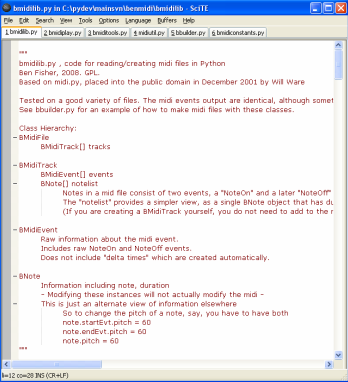
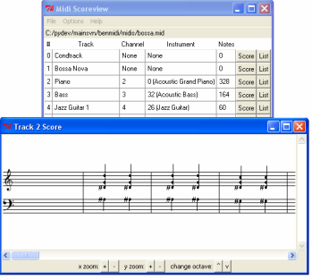
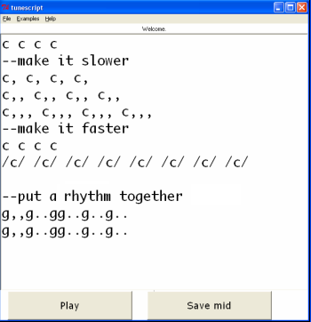

Bmidilib - Python midi code
1) Python Midi Library

2) Scoreview Tool

3) Tunescript Music Toy

Python Midi Library ("bmidilib")
Scoreview Midi App
Tunescript Music Toy
(in a year, I might also make a)
Midi to mp3 tool (with Timidity backend)
Full midi editor
Ben Fisher, 2009
GPLv3.